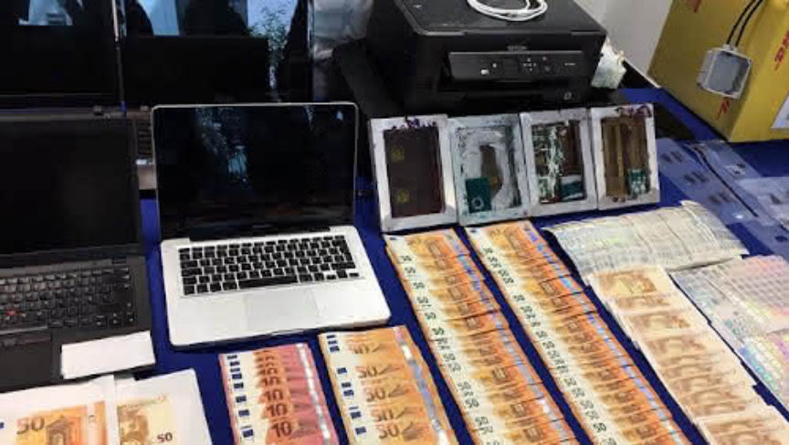
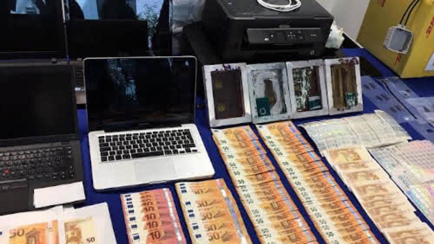

Eleven Arrested in International Counterfeit Euro Operation
~2 min read | Published on 2019-12-17, tagged Arrested, Counterfeits using 305 words.
Europol coordinated raids in seven countries and provided information that led to the arrest of eleven people suspected of buying counterfeit euro notes on the darkweb. The arrests were the product of an investigation into the second largest counterfeit euro trafficking network on the darkweb, according to Europol.
According to an announcement by Europol the raids took place between December 9 and December 11, 2019. The law enforcement agencies involved searched a total of 36 homes in Germany, Austria, France, Greece, Ireland, Luxembourg, and Spain. The searches led to the seizure of undisclosed amounts of counterfeit euros, weapons, drugs, fake documents, and cryptocurrencies. The raids also led to the identification and interrogation of 44 suspects.
Of the 36 homes raided, 27 were in Germany where the authorities dismantled a network producing fake IDs.
“This joint effort by European justice once again demonstrates that anonymity on darknet can be countered with good international cooperation,” the Portuguese Judicial Police said in an announcement.
The raids were based on information acquired from an operation carried out by the Portuguese Judicial Police with support from Europol. The operation took down Europe’s second-largest counterfeit euro network on the dark web. The network had been operating on undisclosed darkweb marketplaces since early 2017 and distributed more than 26,000 counterfeit euro notes to customers on the darkweb.
During the operation, the Portuguese Judicial Police executed eight search warrants in Portugal. The searches led to the discovery and seizure of 1,833 counterfeit euro notes and an assortment of equipment counterfeit euro production. The searches also resulted in the arrest of five suspects: three men and two women between the ages of 26 and 63.
Seized Counterfeiting Supplies
Portuguese authorities issued an international arrest warrant for the suspected leader of the counterfeit euro trafficking network and Colombian police arrested him shortly after receiving the warrant.
According to an announcement by Europol the raids took place between December 9 and December 11, 2019. The law enforcement agencies involved searched a total of 36 homes in Germany, Austria, France, Greece, Ireland, Luxembourg, and Spain. The searches led to the seizure of undisclosed amounts of counterfeit euros, weapons, drugs, fake documents, and cryptocurrencies. The raids also led to the identification and interrogation of 44 suspects.
Fake Euro Notes Seized During the Operation
Of the 36 homes raided, 27 were in Germany where the authorities dismantled a network producing fake IDs.
“This joint effort by European justice once again demonstrates that anonymity on darknet can be countered with good international cooperation,” the Portuguese Judicial Police said in an announcement.
The raids were based on information acquired from an operation carried out by the Portuguese Judicial Police with support from Europol. The operation took down Europe’s second-largest counterfeit euro network on the dark web. The network had been operating on undisclosed darkweb marketplaces since early 2017 and distributed more than 26,000 counterfeit euro notes to customers on the darkweb.
During the operation, the Portuguese Judicial Police executed eight search warrants in Portugal. The searches led to the discovery and seizure of 1,833 counterfeit euro notes and an assortment of equipment counterfeit euro production. The searches also resulted in the arrest of five suspects: three men and two women between the ages of 26 and 63.
Seized Counterfeiting Supplies
Portuguese authorities issued an international arrest warrant for the suspected leader of the counterfeit euro trafficking network and Colombian police arrested him shortly after receiving the warrant.